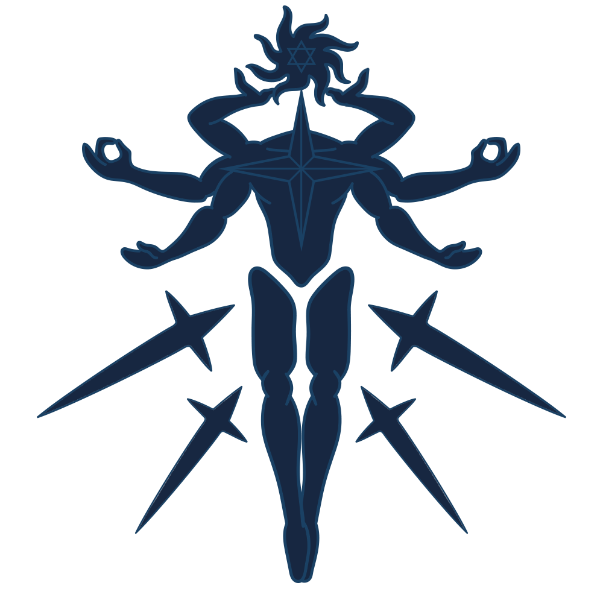
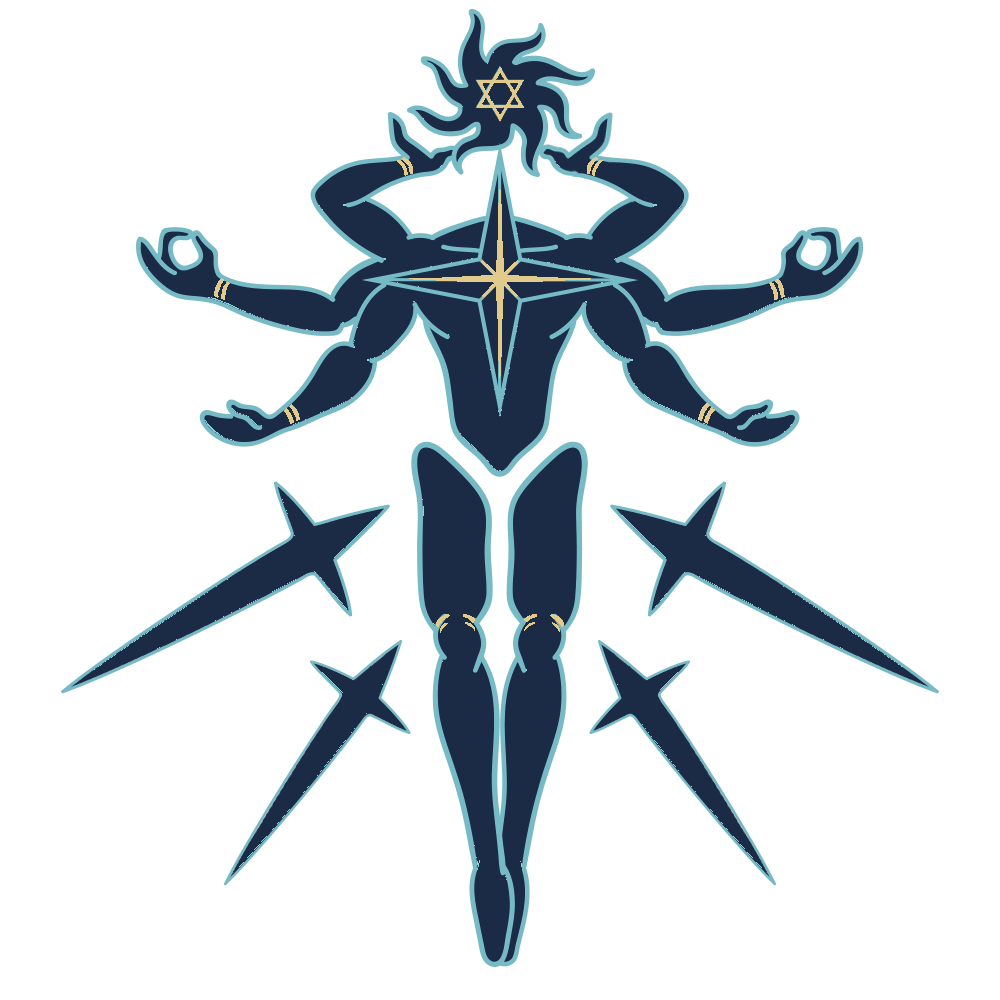

平面素材 · V2
沿用原作，只細修線條。
保留深藍色塊、霓虹描線與原本姿態。角色依頭部、身體、背部拆開，造星神保留分層與骨架。造星神已套用至 1.1.2-web；其餘 9 張角色配件仍為候選設計。
造星神
原六臂姿態 · 平面星核 · 分層浮游刃


沿用原本輪廓，整理描線，星核與腕部加入少量平面金色。可見部件維持原來的拆分位置。
查看分層部件
替換規格
候選包沿用現有資源路徑與匯入設定，提供美術確認與後續替換。
- 角色：180 × 180 RGBA PNG，保留部位留白、原尺寸與對齊位置。
- 造星神：1000 × 1000 PSB，保留 9 個原始圖層（8 個可見部件）、圖層識別碼與每層透明輪廓。
- 原 .meta 原樣附上，保留資源識別、PPU、樞紐與造星神骨架。
- Unity 匯入檢查：查看驗證紀錄。